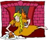
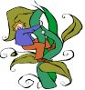
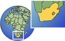
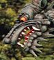
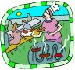
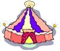
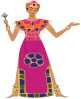
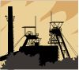
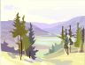
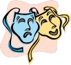

At Toll Bar Primary School we recognise that all pupils are entitled to have access to a broad
range of learning experiences which allow them to develop the knowledge, understanding,
skills and attitudes necessary for their self-fulfilment and to enable them to play a full part
as responsible citizens in the 21st Century. The curriculum aims to provide opportunities for
all pupils to learn and to achieve, irrespective of social background, culture, race, gender,
differences in ability and disabilities.
We aim to provide skills of literacy, numeracy, and information and communication
technology, helping them to develop enquiring minds and the ability to think rationally.
The curriculum also promotes pupils' spiritual, moral, social and cultural development and
supports them in developing principles for distinguishing between right and wrong. Pupils
are encouraged to think creatively and critically and to respect others and the environments
in which they live. The curriculum enables pupils to develop their physical skills and promotes their
personal and social well-being.
We believe that the curriculum should stimulate enjoyment of, and commitment to, learning as a
means of encouraging the best possible progress and the highest attainment for all pupils, preparing
them effectively for the next steps in their education.
Parents are kept up to date about the curriculum and topics by means of a Class newsletter which
includes individual pupil targets, sent out each term.
Topics for 2013/14
| Class |
Autumn Term |
Spring Term |
Summer Term |
| Maple |

Traditional Tales |
Under the sea |
How we move |
| Sycamore |

Once upon a time |

Out of Africa |

Dungeons and Dragons |
| Oak |
Earthly Elements |

The World Kitchen |

Roll up, roll up |
| Cedar |
The Magic Castle |
Is it right to fight? |
Let there be light |
| Willow |

Treasuries and Mysteries |

Getting to know you |
Metamorphosis |
| Chestnut |
Local Industry |

Peaks and Valleys |

The Very Important Bear |
Subject Co-ordinators
- SENCO
- Mrs Melling
- PHSE
- Mrs Melling
- D&T
- Miss Whaley
- Numeracy
- Miss Whaley
- Science
- Anna Taylor
- ICT
- Anna Taylor
- PE
- Mr Bower
- Literacy
- Mr Bower
- RE
- Mrs Davies
- Foundation
- Mrs Davies
- Assessments
- Mr Bower & Miss Whaley
- History
- Mrs Northwood
- Geography
- Miss Careless
- Music
- Mrs Northwood
- Art
- Mrs Northwood
- Modern Languages
- Mrs Bleything